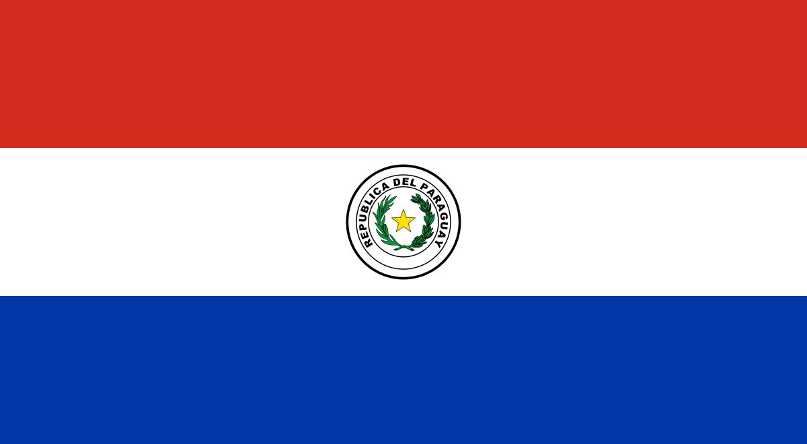

Sobrancelhas
Design de sobrancelhas
Desenho, proporção e expressão. Um olhar dedicado ao formato das sobrancelhas.
Cássia Lima · Catálogo de cursos
Cada especialidade abre uma possibilidade. Encontre a formação que conversa com o seu momento e amplie o seu repertório com a Cássia.

ParaguaiExplore por área
Escolha uma modalidade para conhecer os materiais e conversar sobre turmas, formato e disponibilidade.
13 modalidades para explorar
Conheça os cursos e seus programas.
Sobrancelhas
Desenho, proporção e expressão. Um olhar dedicado ao formato das sobrancelhas.
Pele
Uma modalidade de cuidado com a pele para conhecer de perto com a Cássia.
Pele
Conheça a proposta do curso e converse sobre os requisitos para participar.
Pele
O cuidado com a pele como parte do seu repertório profissional.
Mais caminhos para ampliar sua atuação.
Sobrancelhas
Traços e desenho de sobrancelhas no universo da micropigmentação.
Quero saber maisSobrancelhas
Alinhamento e direção dos fios para compor o desenho das sobrancelhas.
Quero saber maisCapilar e barba
Uma modalidade específica para a região da barba.
Quero saber maisSobrancelhas
Mais uma possibilidade no portfólio de formação em sobrancelhas.
Quero saber maisUma escolha com direção
Conte à equipe se você está começando ou se já atende. Consulte o conteúdo, os pré-requisitos e a disponibilidade de cada curso no seu país.